Git with RStudio
Overview
This page is intended as a starting point for R users who are new to using Git. It shows you the basic commands and the workflow to use Git on your own, in conjunction with using RStudio desktop or RStudio Cloud.
To use Git as a team you should complete this section and the following section on using git collaboratively.
What is version control?
See our guidance on basic version control.
Setup for Git Basics exercise
Creating your access token on GitHub
There is an excellent step by step guide on How to Create your Access Token on GitHub by GitHub Docs. The process is exactly the same as GitLab (see credentials for GitLab), simply input your GitHub username and access token to verify your credentials.
When selecting the access token's scope, the default options that should be ticked are: repo, admin:repo_hook and delete_repo.
Do not forget to paste/save your access token somewhere safe as you won't be able to access it again.
Video: How to create an access token on GitHub
Here's a video on how to create the access token on GitHub: Access token video
HTTPS vs SSH key
You might come across SSH protocol keys, as it is essentially another option to create a password and verify your credentials. This section on HTTPS vs SSH protocol options of setting up credentials on GitHub explains the differences between these two options. There are pros and cons for both, we would recommend the HTTPS option for Git beginners.
Troubleshooting credentials
You might see something like this at any point:
remote: HTTP Basic: Access denied
remote: You must use a personal access with 'read_repository or 'write_repository' scope for Git over HTTP.
remote: You can generate one at https:// etc etc...
remote: Authentication failed for 'repository address you're attempting to git clone'
This can mean a number of things: either your access token has expired or you have entered the wrong access token for your password (or username even). If your access token has expired or about to expire, you can check by going to Gitlab Profile -> Preferences -> Access Tokens then scroll all the way down and see if there’s an Active Access Token and check the expiration date.
-
These steps will help you fix your access to the repository:
-
To fix this we need to create a new access token (don’t assign a date this time, so it will never expire).
-
In the command terminal type
git pull -v(v stands for verification). This should prompt a new Git credentials window. -
If you don't have an existing repository, and can't do step 2, then:
-
In the terminal type
git clone <git repo's copied clone url>but with the new credentials included in the URL, so:
So, in my case it would be:
Exercises 1 - 6
Accessing a Git repository, creating a branch, adding a new file, uploading your changes to GitHub
Getting started - tasks 1 and 2 will be relevant only when accessing a repository for the first time.
Solution to exercises 1 - 6 (Using RStudio Desktop):
Here's the video solution to exercises 1-6: Video exercises solution
Using RStudio Desktop
1. Creating your local Git repository folder
i. Open a Command terminal. This can be any terminal, Anaconda Prompt or Git Bash etc. To access the terminal, click the Search option on the Windows toolbar and type "Anaconda Prompt" and open it. The file directory address that's displayed in the terminal will usually be the default top level C drive address or something similar.
ii. Create a folder in your local directory, this is where the GitHub (remote) repository will be copied/downloaded to. In the Anaconda Prompt terminal type cd <windows explorer repo folder address you just created>, cd stands for Change Directory, and what this means is that the default terminal address will be directed to the new directory, the new folder address. Any Git commands applied in the terminal will apply to the current directory.
(base) C:\Windows\system32>cd C:\Users\<username>\Documents\my_project_folder\demo
(base) C:\Users\<username>\Documents\my_project_folder\demo>
2. Git clone (copy a GitHub repository)
If you're using GitLab instead of GitHub, these steps will help you set up.
i. The repository's clone URL will be on the GitHub repository's main page (see image below).
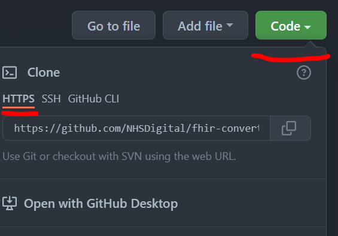
ii. Type git clone <repository's clone url> the git-demo repository using your local terminal. Enter your credentials when prompted (GitHub username and access token for the password.)
(base) C:\Users\<username>\Documents\my_project_folder\demo>git clone <paste the repo url address from the image above>
iii. Type cd <windows explorer repo folder address> (open the newly downloaded git folder) in the terminal to assign the root level of the directory to the top level of the repository. This because the terminal is assigned to the folder containing the Git repository, not the folder that IS the Git repository.
iv. Type git status in the terminal. You should see the this message:
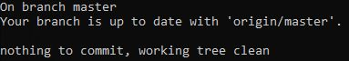
3. Create and switch to a new branch
Notice how in the image above, the first line says "On branch main". In Git, "main" is a naming convention for a branch. After cloning (downloading) a project from a remote server, the resulting local repository has a single local branch: the so-called "main" branch. This means that "main" can be seen as a repository's "default" branch. The main branch should always be locked, to protect the main build of your working code and/or documentation. To add new code/documentation/make any edits to the main branch, you need to submit a pull request.
"Branch" is another word for "version". Usually when developing a document or slides for a presentation, we could have numerous versions of the same slides, with small or major differences. By using different branches (or versions) of the same code, we can safely work and test without breaking the publication code, that resides in the default master branch of the repository.
i. To create a new branch, head over to GitHub, on the repository's main page, same webpage we used to find the Git clone repository's URL. To create a new branch on GitHub simply click on the "main" button underneath your repository's title.
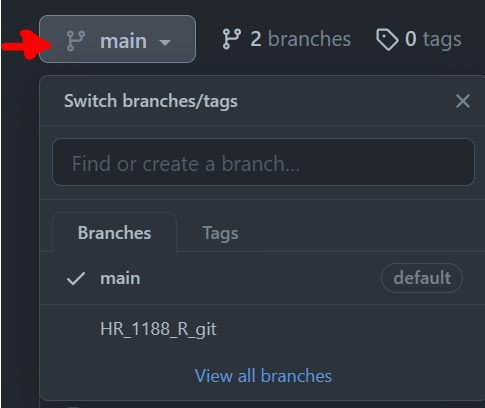
ii. Once in the dropdown menu, type in the branch's new name and hit Enter. You should now have a new branch, copy of the main branch.
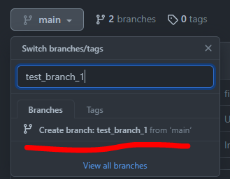
iii. In the above image notice how it points the original branch we are copying from, in grey letters: from "main". If you wish to create a new branch, which will be a copy from a different branch to "main", then set the repository to the branch you wish to copy from and then repeat steps i. and ii.
iv. Back to the terminal (e.g. Command Prompt/Anaconda Prompt/Git Bash etc.), type git branch -a to view a list of all available branches existing in the repository. The branches that contain the remote/ path are the branches online, on GitHub. Have a look at the list. You will notice your new branch is not there yet. To update your local master branch with all the latest updates on Gitlab, type git pull. Type git branch -a and you should see your branch available in the list now.
v. To start working on your branch and select, type in the terminal git checkout <your branch name>.
vi. Type git status and this way you can confirm that you are in a new branch. Git will display a message showing the current branch name and the current branch's information.
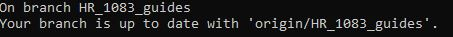
Reminder: any changes you make while in the main branch won't be uploaded to GitHub, as the main branch is protected and locked, so make sure you are in your own working branch! You can confirm this with step vi. above.
Branch naming strategy
Following an agreed naming convention will make it much easier to keep the team's work organised. We follow use this approach:
<project_id>_<initials>_<ticket_number>_<brief-description>
Here the project_id refers to our project ID in confluence (DS218). The initials are from my name. The ticket number refers to the jira ticket number. E.g.:
DS218_CQ_167_Add-field-definitions
Naming branches in this way helps to make it very clear what change should be happening in the branch. Sometimes code review will reveal that a branch that was intended to make one specific change in fact makes several changes. This should be avoided and the code review should reject the additional changes.
4. Add a new file
By adding a new file to the project, you can avoid conflicts as each analyst will create and upload their own file.
There are many ways to add a new file to your branch. One way is to upload a file directly to your branch on GitHub.
The easiest way is to simply create the file (any type of file) in your working directory, while in your branch. You can also copy a file from another directory. The file you create or copy can be any type of file.
For this exercise, create a file while in RStudio, with simply right-clicking on the repository's folder and then selecting the Create New File option:
To view and edit the repository's folders and files in RStudio:
i. Open RStudio
ii. On the top toolbar go File -> New Project, this will open a Create New Project dialogue.
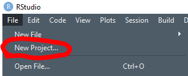
iii. In the Create New Project dialogue, select existing directory (since we have already cloned the GitHub repository to your local machine and have a folder) and in Location select the Open Folder icon to select the existing folder repository and click Create Project.
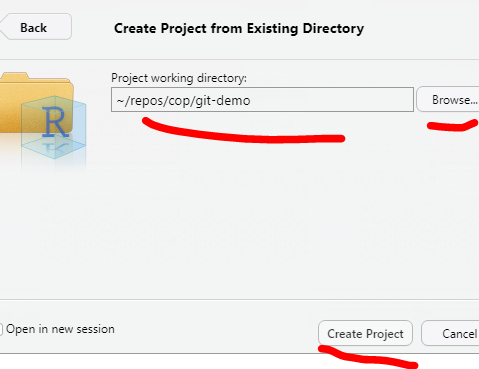
iv. You should be able to see the project structure on the lower right hand side window as it is displayed on GitHub.
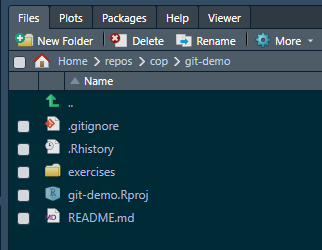
v. On the top toolbar select File -> New File -> Rscript and save the file somewhere in your repository (don't forget to name your Rscript!).
vi. Add something into that file, a simple print statement or a comment.
vii. Save it on RStudio.
Tip: RStudio will have created a .Rproj/.Rhistory configuration file when you create an R project. To avoid having this uploaded to GitHub, a .gitignore file that contains those file formats will automatically block them from being pushed to the repository. See .gitignore for more information.
5. Commit your changes (follow standard Git command workflow)
In the Anaconda Prompt (or any terminal of your choice) type the following. I suggest you read through the git messages displayed after each command entered in the terminal, to familiarise yourself with the logic.
i. Type git status to see the modifications that haven't been staged yet (in red colour).
ii. Type git add <filename> to stage your changes. Or git add . to simply stage all changes automatically (use with caution).
iii. Type git status to see the file modifications now have a green colour. This means that Git add was successful.
iv. Type git commit -m "your commit message here" to commit these changes.
v. Type git status to view the status of your repo. There should be no modifications visible (or colours!).
vi. Type git push. This command will upload all your committed changes to GitHub.
6. Check the repository on GitHub to view the changes updated
Simply head over to GitHub, and the repository page on GitHub, select your branch and compare the changes between your branch and the master branch.
Using RStudio Cloud
To use GitHub with RStudio Cloud and not RStudio desktop, first create an account with RStudio Cloud. RStudio Cloud has a detailed guide on how to create projects, how to manage workspaces within the Cloud, how to handle permissions and teaching spaces.
- To create a project from GitHub, select the "Your Workspace" option on the left hand side once in RStudio Cloud and select New Project on the far right of the top toolbar, in the Your Projects space.
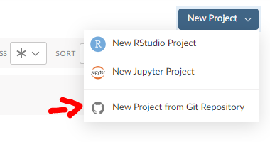
- This will open a new dialogue that will ask for the Git Repository URL, this is the URL you copy, as described in Step 2 of this guide.
- You will be prompted to enter your username (GitHub username) and your password, which is the access token created from the Create Access token step.
- Once the Git repository is deployed, you will notice the repository file structure on the right hand side panel.
- Steps 3, 4 and 5 will be the same, the only change being that instead of using your local terminal to input Git commands, you will be using the RStudio Cloud built-in terminal.
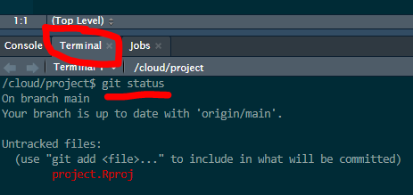
How to submit a pull request
Pull request (PR) is the application you submit on the GitHub repository, to announce to other collaborators working on the repository that you have a new change ready to be merged/part of the main build, the main branch of the repository. Then, either your collaborators or someone you assign will review the change and the branch you have been working on to determine whether the change is ready to be merged with the main branch. The equivalent term for GitLab users is Merge Request (MR).
To submit a pull request:
-
Simply head over to GitHub and to the respective repository
-
Select Pull requests on the top bar menu.
-
Either select New Pull Request (big green button) on the right hand side or select Compare & pull request if you recently pushed new changes to the branch.
-
Base ref will default to the main branch, head ref will be the branch you wish to merge with the main branch. You can change any of these options, there will be occasions you won't always aim to merge every branch to the main branch.
-
Click Create Pull Request.
-
Fill out any information related to the Pull request, title, description, any comments. On the right hand side you can assign yourself as the Assignee, and assign someone in your team to be the Reviewer. Then, select Create Pull Request.
How to accept a pull request
Once you are assigned the pull request's reviewer, you should receive an email notification from GitHub with a link to the pull request's webpage. You can also view any active pull requests by clicking on Pull Requests on the top bar menu.
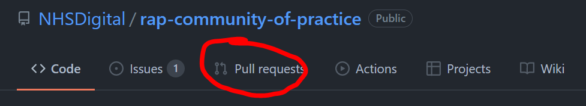
On the Pull request page, there are four tabs: Conversation, Commits, Checks and Files changed:
Conversation
Conversation is the main pull request page. It contains the pull request's description, timeline and comments left by the assignee or reviewer. To merge a pull request you have 3 presented options:
- Merge pull request: this will keep all commits history of the source branch and will be added to the target branch. Creates a symbolic commit.
- Squash and merge: ticking this will merge the history of commits for the source branch into one commit. This can be useful when the pull request is not a major update and you don't want your repository's history of commits to contain commits with messages such as "fixed typo", "replaced incorrectly placed image". Creates a symbolic commit.
- Rebase and merge: adds all source branch commits in front of the target branch's commits. Does not create a symbolic commit.
Commits
Commits tab displays a history of the pull request's commits. So for example, if the reviewer decides that minor adjustments are required and the assignee pushes these changes to Gitlab, then these commits will be captured in this tab.
Files changes
Files changed tab, here you can see all the new changes in the pull request's source branch. You can also opt for a side-by-side comparison, and see line-by-line how the master version and new branch version compare. You can also leave comments on each file's line, which will also be recorded in the Conversation tab's timeline.
Checks
Checks is part of the GitHub Actions functionality, which enhances your code review processes with apps and automated reviewing checks. This is inactive on default.
If you are happy to merge the two branches, then select the type of Pull Request you wish to apply and the pull request should be completed in a few seconds.
How to update your local main branch to the latest remote main version on GitHub/GitLab
-
Open the Anaconda Prompt terminal or Git Bash or any other terminal you wish to use. This can be accessed by typing, for example Anaconda Prompt, in the search bar, after opening the search icon on your Windows toolbar.
-
Type
cd <paste your work directory address>in the terminal to switch to your working directory. This is where the Git repository is cloned/copied/downloaded to, on your local machine (or RDS environment or any environment you're using). This will cause the default terminal address to be directed at the new directory. (see Git Clone instructions above for more info) -
Type
git statusin the terminal to ensure thatiihappened successfully and you are on the default main branch. You should see this message:
- Type
git pullto update your local main branch with the latest version of the remote/online GitHub main branch. This might take a few seconds.
(Optional) 5. If you're in a different branch and not the main branch, then type in the terminal git checkout main and then git status to confirm you are on the main branch.
External links
External Links Disclaimer
NHS England makes every effort to ensure that external links are accurate, up to date and relevant, however we cannot take responsibility for pages maintained by external providers.
NHS England is not affiliated with any of the websites or companies in the links to external websites.
If you come across any external links that do not work, we would be grateful if you could report them by raising an issue on our RAP Community of Practice GitHub.